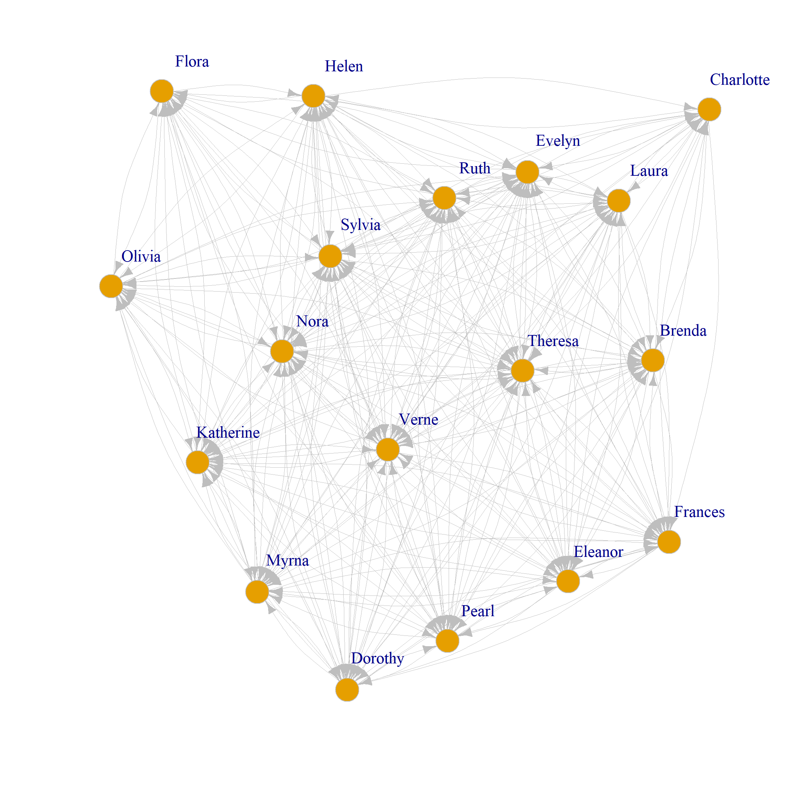
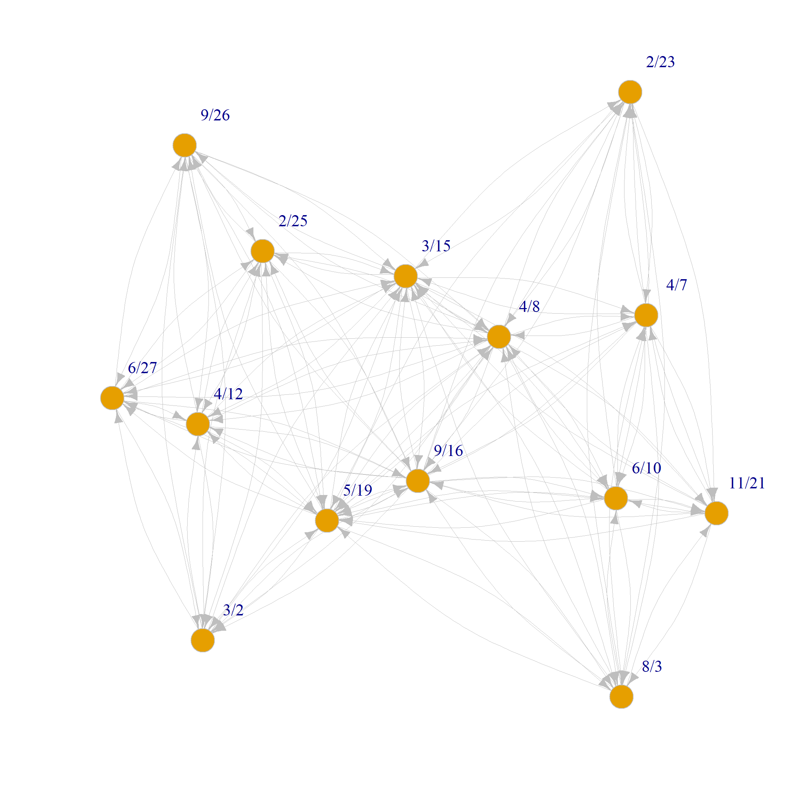

An Asymmetric Approach to Dual Projection
Zhou et al. (2007) describe an asymmetric approach to projecting a two-mode network into two one-mode weighted networks. The motivation is to move beyond two limitations of the Breiger projection approach we covered before: (1) the fact that the standard projection always results in a symmetric weighted adjacency matrix, and (2) the fact that nodes in two-mode networks that only connect to a single entity in the other node are necessarily excluded from the traditional projection (they are isolates).
Let’s see how this works. First, let’s load up our trusty Southern Women dataset and create the biadjacency matrix A as we did in the previous section:
Formally, in Zhou et al. (2007)’s approach, each entry of the person projection matrix is computed by summing over the groups that two people share, but instead of counting each shared group as one point, we weigh it by the degree of the group and the degree of the other person.
So if \(\mathbf{k}^p\) is the degree vector of the people, \(\mathbf{k}^g\) is the degree vector of the groups, and \(m\) is the total number of groups, then the entry \(p_{ij}\) of the weighted person projection matrix is computed as:
\[ p_{ij} = \sum_{l=1}^{m} \frac{a_{il}a_{jl}}{k^p_j k^g_l} \tag{1}\]
The numerator of this equation counts the total number of memberships shared by persons \(i\) and \(j\) as \(a_{il}a_{jl}= 1\) only when group \(l\) is shared between persons \(i\) and \(j\), but the denominator weights each shared membership by the number of memberships of person \(j\) and the size of the shared group \(l\). The intuition is that if person \(j\) belongs to many groups, then sharing a group with them is less meaningful, and if group \(l\) has many members, then sharing that group is also less meaningful.
On the group side, the entry \(g_{ij}\) of the weighted group projection matrix is computed similarly:
\[ g_{ij} = \sum_{l=1}^{n} \frac{a_{li}a_{lj}}{k^g_j k^p_l} \tag{2}\]
Where \(n\) is the total number of people, and the intuition is the same as for the person projection: if group \(j\) has many members, then sharing a member with that group is less meaningful, and if person \(l\) belongs to many groups, then sharing that person is also less meaningful.
Now let’s compute these projections in R. We can do this by defining two functions that implement the formulas above:
Code
# Function to compute the weighted person projection
zhou.proj <- function(A) {
k_p <- rowSums(A) # degree vector of people
k_g <- colSums(A) # degree vector of groups
m <- ncol(A) # total number of groups
n <- nrow(A) # total number of people
P <- matrix(0, nrow = nrow(A), ncol = nrow(A)) # initialize person projection matrix
for (i in 1:nrow(A)) {
for (j in 1:nrow(A)) {
P[i, j] <- sum((A[i, ] * A[j, ]) / (k_p[j] * k_g)) # compute entry p_ij
}
}
G <- matrix(0, nrow = ncol(A), ncol = ncol(A)) # initialize group projection matrix
for (i in 1:ncol(A)) {
for (j in 1:ncol(A)) {
G[i, j] <- sum((A[, i] * A[, j]) / (k_g[j] * k_p)) # compute entry g_ij
}
}
rownames(P) <- colnames(P) <- rownames(A) # set row and column names for person projection
rownames(G) <- colnames(G) <- colnames(A) # set row and column names for group projection
return(list("P" = P, "G" = G))
} Now we can apply this function to our biadjacency matrix A to get the weighted person and group projections:
Code
Evelyn Laura Theresa Brenda Charlotte
Evelyn 0.186 0.165 0.144 0.153 0.135
Laura 0.144 0.179 0.115 0.132 0.098
Theresa 0.144 0.132 0.157 0.120 0.160
Brenda 0.134 0.132 0.105 0.167 0.160
Charlotte 0.068 0.056 0.080 0.092 0.160 6/27 3/2 4/12 9/26 2/25
6/27 0.137 0.089 0.068 0.067 0.051
3/2 0.089 0.131 0.065 0.062 0.049
4/12 0.137 0.131 0.173 0.161 0.129
9/26 0.089 0.083 0.107 0.161 0.080
2/25 0.137 0.131 0.173 0.161 0.192The Zhou et al. (2007) approach results in two asymmetric weighted adjacency matrices for the person and group projections, which can be used for various analyses such as clustering, centrality analysis, or visualization. The key advantage of this approach is that it accounts for the degree of nodes in the other mode, providing a better representation of the relationships in the two-mode network.
Note that we can also express the Zhou et al. (2007) projection in matrix notation. If \(\mathbf{A}\) is the biadjacency matrix, \(\mathbf{D}_p\) is the diagonal degree matrix of the people, and \(\mathbf{D}_g\) is the diagonal degree matrix of the groups, then the weighted person projection matrix \(\mathbf{P}\) and the weighted group projection matrix \(\mathbf{G}\) can be computed as:
\[ \mathbf{P} = \mathbf{A} \mathbf{D}_g^{-1} \mathbf{A}^T \mathbf{D}_p^{-1} \tag{3}\]
\[ \mathbf{G} = \mathbf{A}^T \mathbf{D}_p^{-1} \mathbf{A} \mathbf{D}_g^{-1} \tag{4}\]
Where \(\mathbf{D}_p^{-1}\) and \(\mathbf{D}_g^{-1}\) are the inverses of the diagonal degree matrices of the people and groups, respectively. This matrix formulation allows for more efficient computation of the projections, especially for larger networks, as it leverages matrix operations instead of nested loops. We can compute the person projection using this matrix formulation as follows:
Code
P <- A %*% solve(diag(colSums(A))) %*% t(A) %*% solve(diag(rowSums(A)))
colnames(P) <- rownames(P) <- rownames(A) # set row and column names for person projection
G <- t(A) %*% solve(diag(rowSums(A))) %*% A %*% solve(diag(colSums(A)))
colnames(G) <- rownames(G) <- colnames(A) # set row and column names for group projection
round(P [1:5, 1:5], 3) # view the first 5 rows and columns of the person projection Evelyn Laura Theresa Brenda Charlotte
Evelyn 0.186 0.165 0.144 0.153 0.135
Laura 0.144 0.179 0.115 0.132 0.098
Theresa 0.144 0.132 0.157 0.120 0.160
Brenda 0.134 0.132 0.105 0.167 0.160
Charlotte 0.068 0.056 0.080 0.092 0.160 6/27 3/2 4/12 9/26 2/25
6/27 0.137 0.089 0.068 0.067 0.051
3/2 0.089 0.131 0.065 0.062 0.049
4/12 0.137 0.131 0.173 0.161 0.129
9/26 0.089 0.083 0.107 0.161 0.080
2/25 0.137 0.131 0.173 0.161 0.192Which gives us the same result as the nested loop implementation.
Not that as promised, the entries of the person and group projection matrices are not symmetric, meaning that \(p_{ij} \neq p_{ji}\) and \(g_{ij} \neq g_{ji}\) in general. This is because the weighting scheme accounts for the degree of the nodes in the other mode, which can lead to different weights for the same pair of nodes depending on their degrees.
We can check this formally using the base R function isSymmetric:
[1] FALSE[1] FALSEWhich returns TRUE for the usual Breiger projection but FALSE for the degree-weighted projection.
We can create weighted directed igraph objects from the degree-weighted projections using the function graph_from_adjacency_matrix as follows:
Note that we set the mode argument to directed, the weighted argument to TRUE, and the diag argument to FALSE (to ignore the diagonal entries).
We can, of course, plot the directed weighted graphs on each mode as usual:
Code
set.seed(123)
plot(g.p,
vertex.size = 8, vertex.frame.color = "gray",
vertex.label.dist = 2, edge.curved = 0.2,
vertex.label.cex = 1.5, edge.color = "gray",
edge.width = E(g.p)$weight
)
plot(g.g,
vertex.size = 8, vertex.frame.color = "gray",
vertex.label.dist = 2, edge.curved = 0.2,
vertex.label.cex = 1.5, edge.color = "gray",
edge.width = E(g.g)$weight
)
